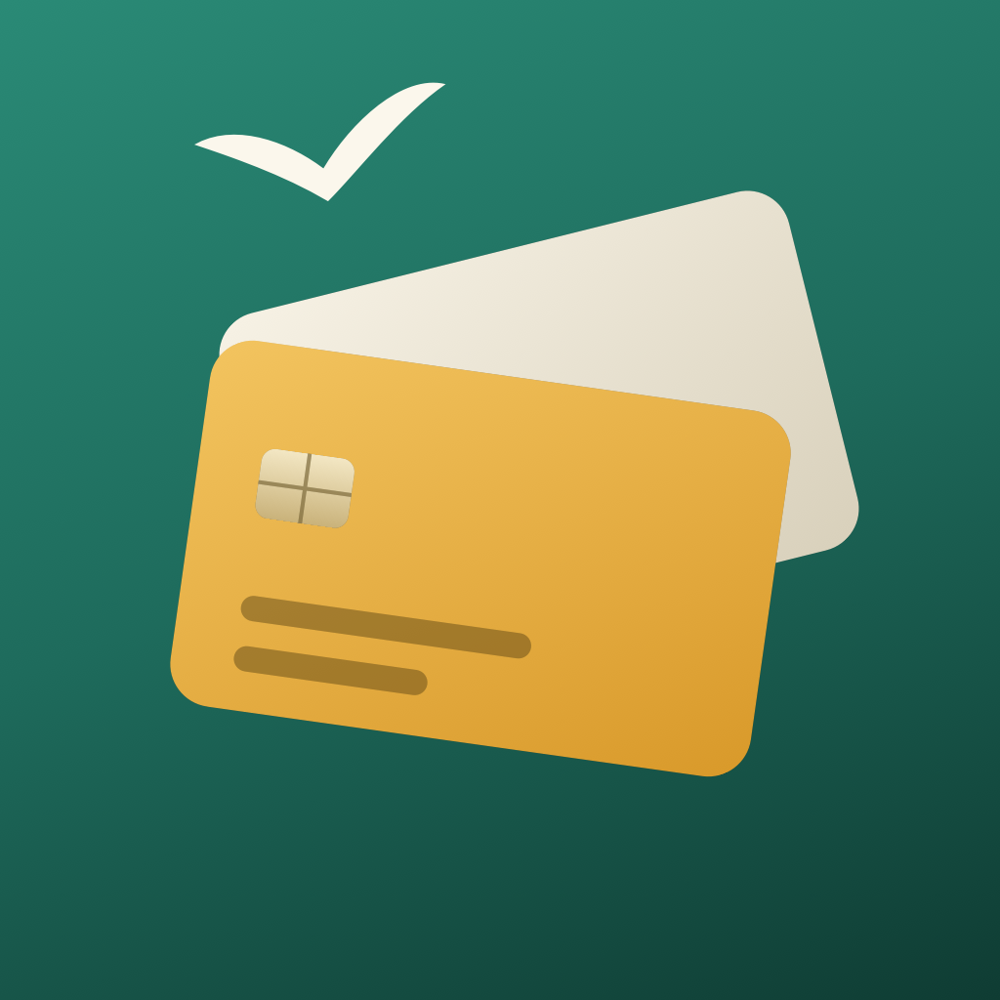

CardlarkSupport
Answers to common questions are below. If yours isn’t, email k.fitzgerald310@gmail.com with your device model and iOS or iPadOS version.
Which card to use
How does Cardlark pick a card?
Type a store or pick a category and enter the amount. Each of your cards is ranked by estimated return: the purchase amount times the card’s rate there, times what its points are worth (1¢ a point unless you change it), plus the best offer you’ve saved for that card and store. Each result says why, such as “4x dining” or “your 5% category this quarter”.
Why doesn’t the store earn what I expected?
Card rewards follow the code the store’s card terminal reports, not the store’s name. Superstores like Walmart and Target often don’t code as groceries, and warehouse clubs code as wholesale clubs. Cardlark shows how a store usually codes; if yours codes differently, tap Codes as… and pick the category; Cardlark remembers it for that store.
Are spending caps counted?
Caps are shown on each result but not tracked, because Cardlark doesn’t see your spending. Rates booked only through an issuer’s travel site are listed as tips, not counted at a store.
My card has rotating or chosen 5% categories.
Open the card in Cards and add a bonus category with the date it ends. Cardlark counts it until then and can remind you when a new quarter starts.
Card data
Where do the rates come from?
From each issuer’s public card page, read by a person (no scraping), with a link to the page and the date it was checked on every card. Updates arrive with app updates, about every quarter.
A rate is wrong or out of date.
Open the card and tap Report an outdated rate: it starts an email with the card’s name and the data version. You can also tap any rate to change it right away; a dot marks your edits, they’re kept when the card data is updated, and Reset to published undoes them.
My card isn’t listed.
Cardlark includes popular U.S. cards. With Pro, Make your own card adds any card with your own rates, fee and credits.
Offers and credits
Can Cardlark add my bank’s offers?
No. No bank offers an official way for apps to list or enroll card-linked offers, and Cardlark never asks for a bank login. Add the offer in your bank’s app, then save it in Cardlark with its end date (or paste its wording to fill it in). Cardlark counts it on the Pay screen and reminds you before it ends.
Why didn’t I get a reminder?
Check that reminders are on in Cardlark’s Settings and that notifications for Cardlark are allowed in the Settings app. iOS keeps a limited number waiting, so Cardlark plans the next ones each time you open it.
When do credits reset?
Monthly, quarterly, twice a year or each calendar year, as the issuer describes. Card-member-year credits reset with the anniversary month you set on the card. Some issuers reset on a statement date instead, so allow a day or two.
About the estimates
Is this financial advice?
No. Cardlark is an estimator, not financial advice. Its numbers are estimates from issuers’ public card terms; issuers change rates and stores don’t always code the way you’d expect, so your card’s terms are what count. Cardlark is not affiliated with any bank or card network, and card names are trademarks of their owners.
Cardlark Pro
What does Pro add?
Unlimited cards (free: 3) and active saved offers (free: 5), credit logging and reminders before unused credits reset, custom cards, and backup and restore. Every ranking is free. Pro is a one-time purchase with Family Sharing, and there’s no subscription.
Purchases
How do I get a refund?
Apple handles App Store refunds. Request one at reportaproblem.apple.com.
Do I have to pay again on another iPhone or iPad?
No. Sign in with the same Apple Account, open Settings in the app and tap Restore Purchase.